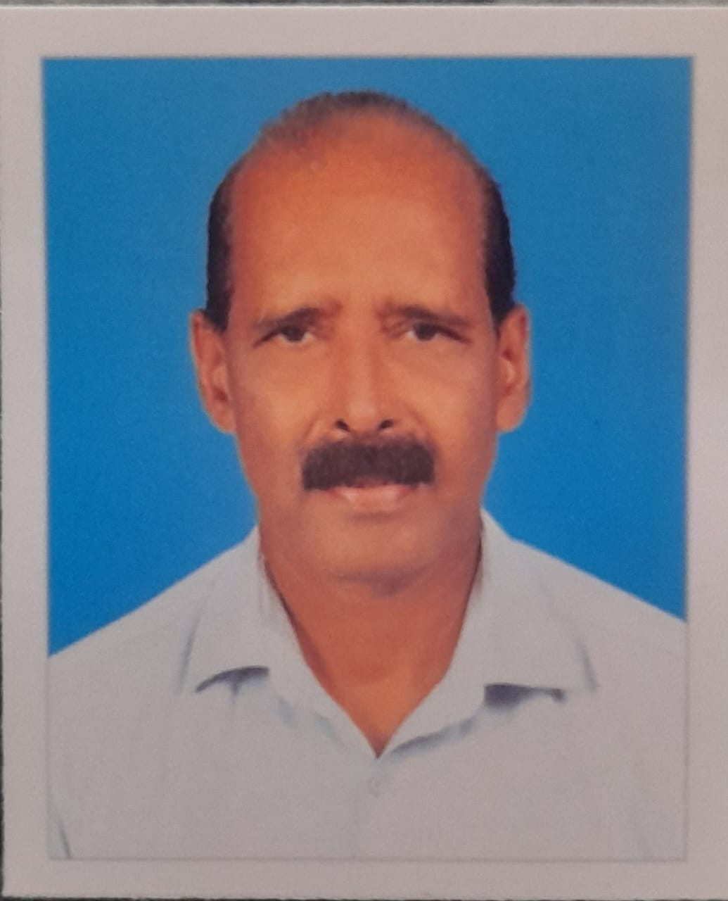

Management team and Board of Directors

Prof. (Dr.) K P Joy ChairmanFormer Chairman, State environment impact assessment Authority, principal of a post Graduate College, Member syndicate and pollution control board, Director of environmental studies of M.G. University and Kannur University. |

Dr. Kurian P Abraham Managing DirectorVice President, Sri Devi Resolutions Pvt Ltd. Former General Manager ,Corporation Bank (now Union Bank of India), Member, Advisory Board MRL Ltd., Hyderabad and CEO of 2 Kerala Headquartered Gold Loan Financing NBFCs. |

Sri. K S Harikumar PresidentDebenture Trustee, Muthoottu Mini Financiers Ltd. Former General Manager of Federal Bank, Chief Regional Manager of Manappuram Finance Ltd.
|

Sri. A I James DirectorFormer AGM, Corporation Bank (now Union bank of India), Whole time Director & Company Secretary- Corp Bank Securities Ltd Mumbai, General Manger (Finance) and CS in NBFCs.
|

Sri. P Koshy DirectorPurchase Manger, Saintgits Group of Engineering Colleges and Former Manger, Punjab National Bank. |

Sri. K D George DirectorManaging Director HOBCM, President, EKM District Govt. Contractors Co-op Society. Class 1 contractors. |

Sri. Ramachandran Nair Director‘A’ Class Electrical and AC Contractors PWD, Govt. of Kerala |